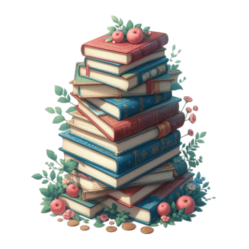
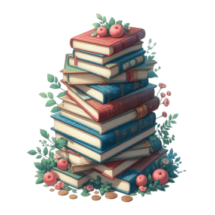

-
En este tratado, Sun Tzu expone una serie de principios fundamentales para alcanzar la victoria en cualquier confrontación. A lo largo de sus páginas, ofrece sabias reflexiones sobre la importancia de la planificación meticulosa, la adaptabilidad, el conocimiento del enemigo y la capacidad para aprovechar sus debilidades. Destaca la idea de que la mejor manera de ganar una guerra es evitarla en primer lugar, mediante la astucia y la diplomacia. Lo más notable de “El arte de la guerra” es su relevancia atemporal. A pesar de haber sido escrito hace más de dos milenios, sus lecciones siguen siendo aplicables en el mundo contemporáneo. Muchos líderes empresariales, políticos y estrategas militares lo consideran una lectura obligatoria, ya que ofrece una perspectiva única sobre el conflicto y la resolución de problemas. En resumen, “El arte de la guerra” es mucho más que un manual militar antiguo; es una obra maestra intemporal que ofrece una visión profunda sobre la estrategia, la táctica y el arte de la negociación, siendo una lectura esencial para aquellos que buscan comprender y aplicar los principios fundamentales de la victoria en cualquier campo de batalla, ya sea literal o figurado.conoce más aquí